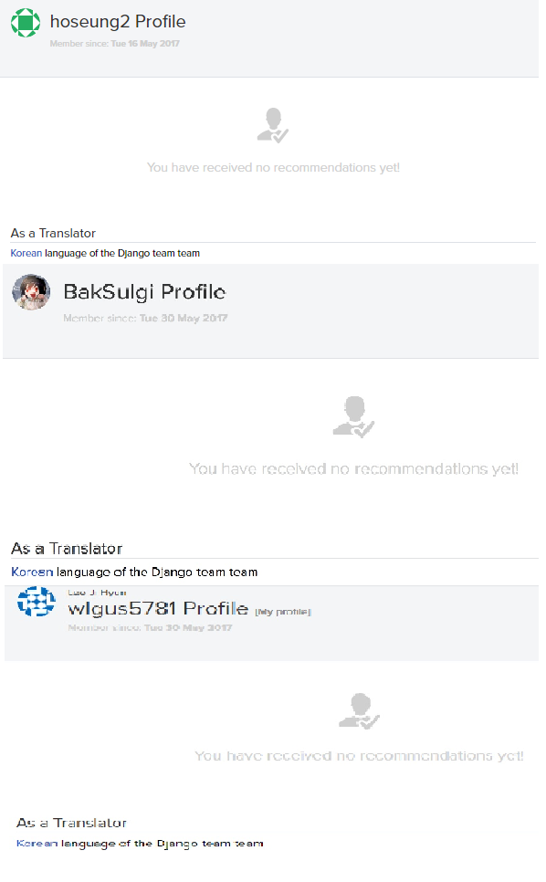
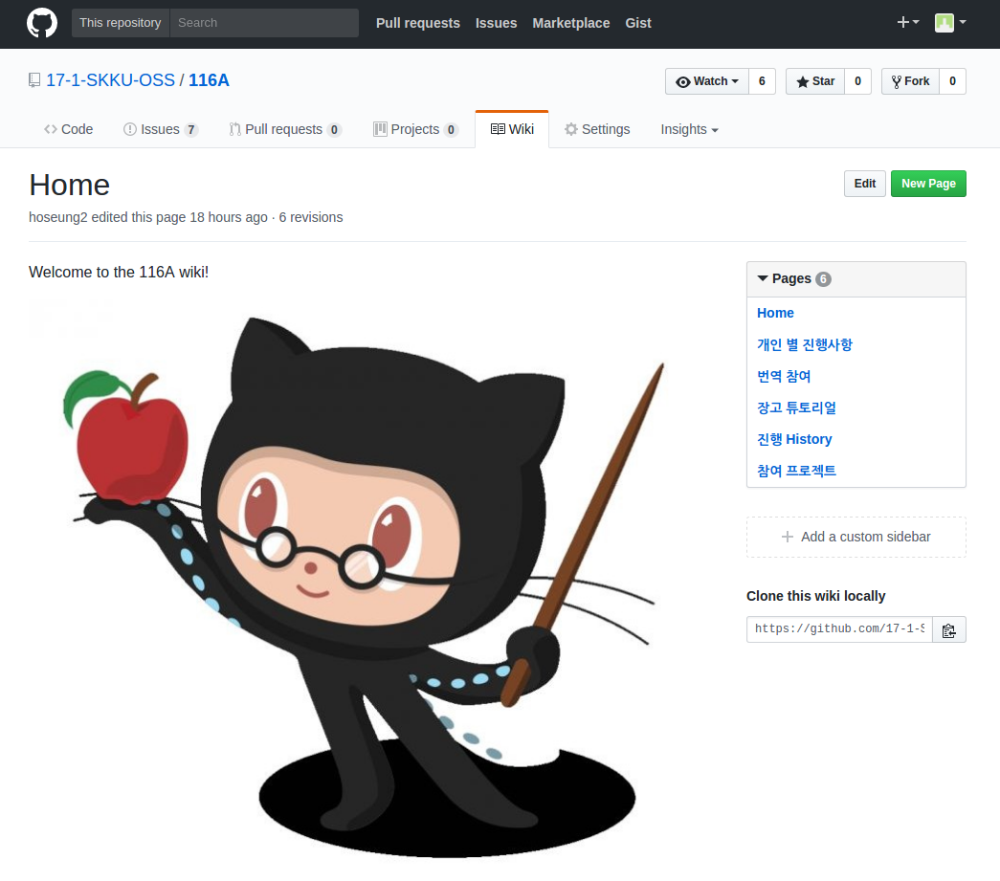
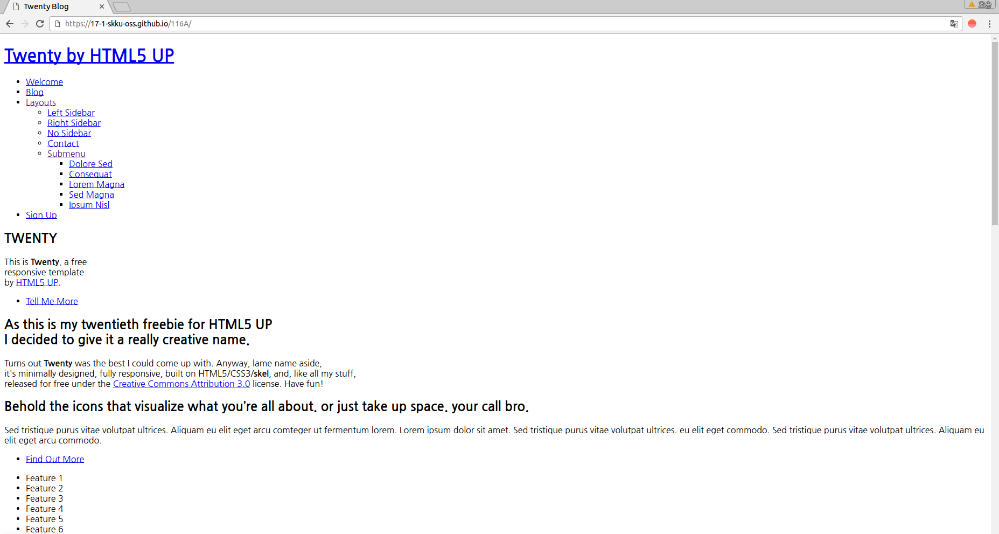
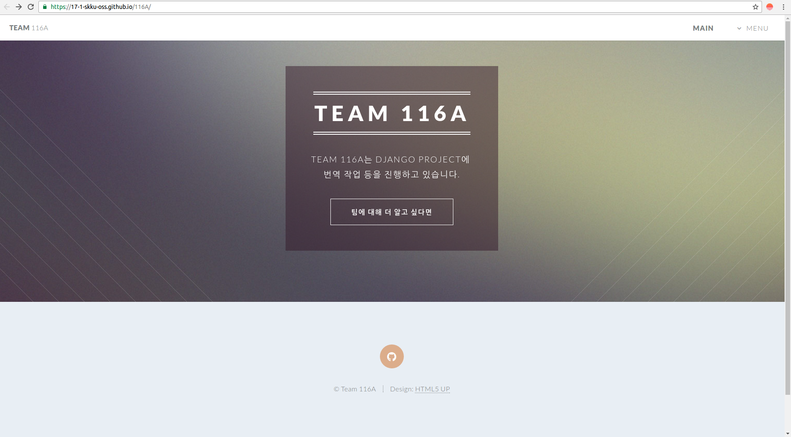
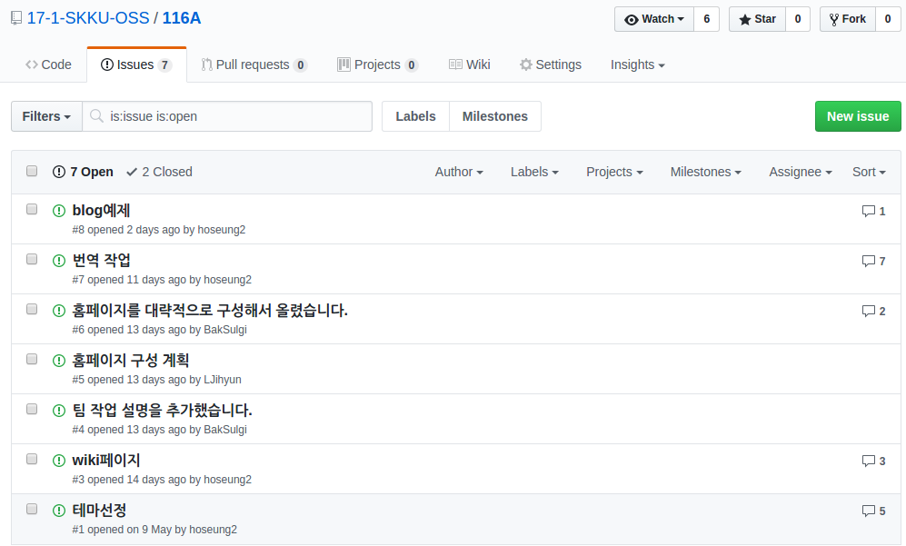
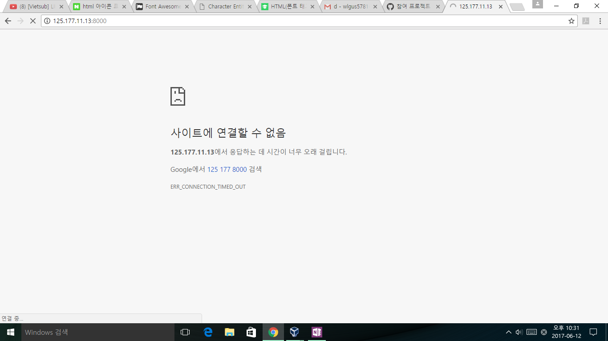

Self evaluation 객관적으로 스스로를 평가하라 ⋆ GITHUB활동 평가하기 ⋆ 잘한 점 1. 번역  Ⓢ 팀원 모두가 Django 한국어 번역팀에 참여하여 프로젝트에 많은 기여를 했다. 2. wiki 관리  Ⓢ 참여하는 project를 이해하기 쉽도록 중요한 점을 간략하게 적어놓았다. 3. github page 관리  ✓ jekyll 테마파일을 push하는 과정에서 본래와 구성이 바뀌는 문제점이 발생했다. Ⓢ 끊임없는 시도와 다양한 해결책을 반영해 봄으로써 해결했다.  못한 점 1. issue 관리  ✓ issue를 작성하고 관리를 하지 않은 것도 많다. ✓ 대부분의 작업을 만나서 진행하였기에 issue의 양도 적다. 2. blog 예제 적용  ✓ 우리가 직접 적용시켜 본 zinnia blog 예제를 apache를 이용하여 외부에서도 접근할 수 있게 하고 싶었으나 실패했다.